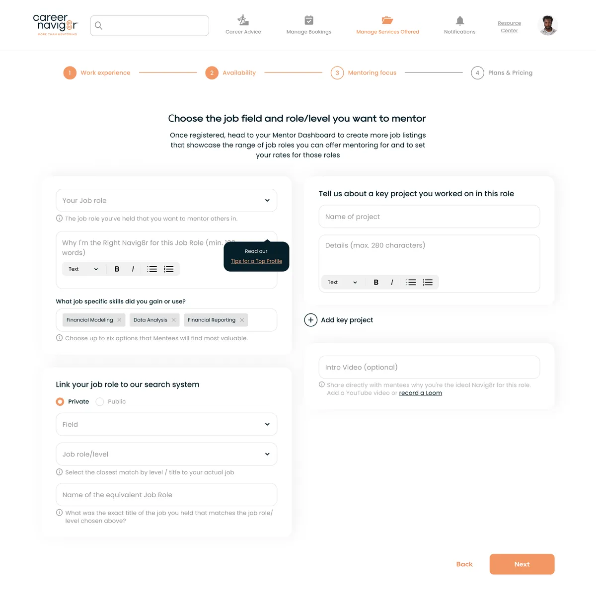
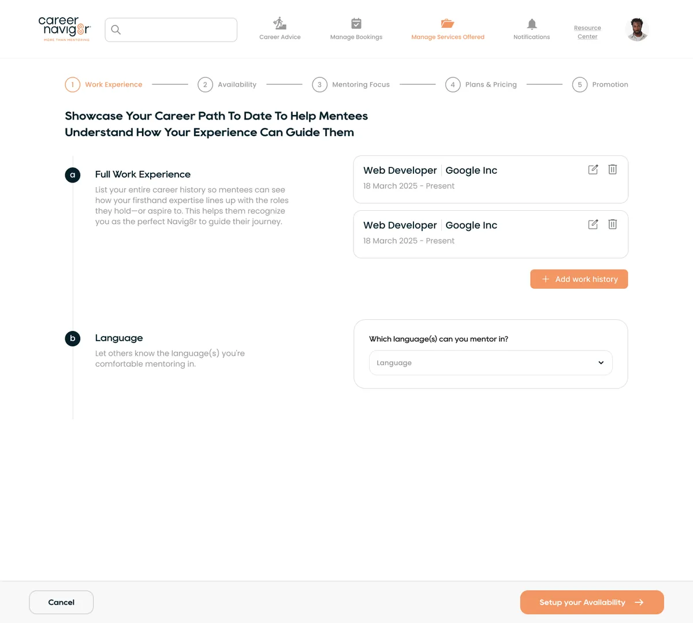
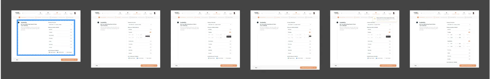
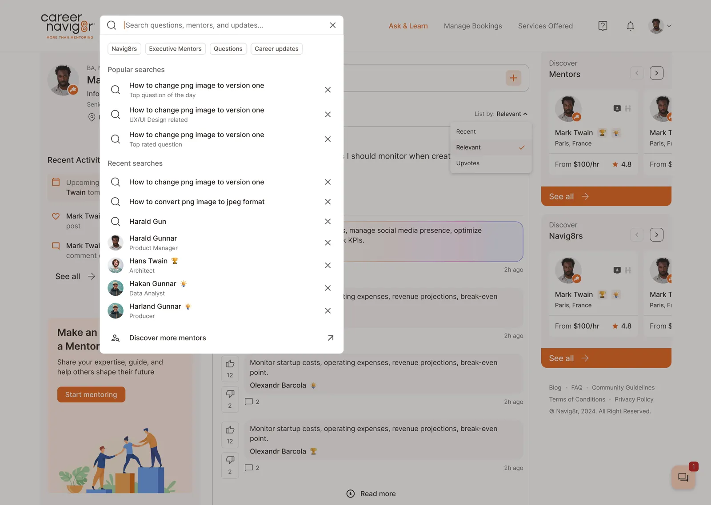
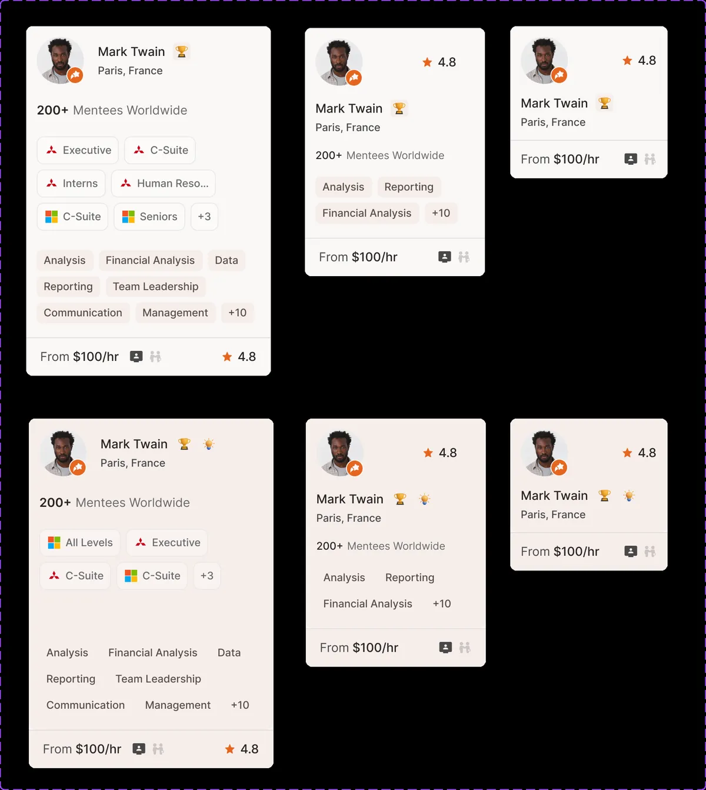

My part
I was the only designer, taking over a platform a previous designer had started. I redesigned mentor onboarding and designed the feed, posting, search and mentor cards. The founder owned the direction and the developers built it.
The problem
No mentors, no bookings. But becoming a mentor was the hardest flow in the product: 4 crowded steps, a 100-word essay, and one page with about 30 controls for availability, languages and links at once.


One topic per step
I split setup into 5 steps: Work Experience, Availability, Mentoring Focus, Plans and Pricing, and Promotion. Each step answers one question, and the left column explains why it matters.
Show only what's needed
Time pickers appear only for days that are switched on. Saved jobs collapse into small cards. The busiest screen went from about 30 controls to 8.

Review before saving
A final page shows the whole profile with an edit link per section, so mentors fix mistakes without stepping back through everything.
Beyond onboarding
I also designed the home feed, posting, comments, search with filters and mentor cards, testing several card layouts to see how much a card can hold before it gets hard to scan.


What I'd do differently
The time savings come from walkthroughs, not usage data. Next time I'd add step-by-step completion tracking before launch, to see where mentors really drop off.